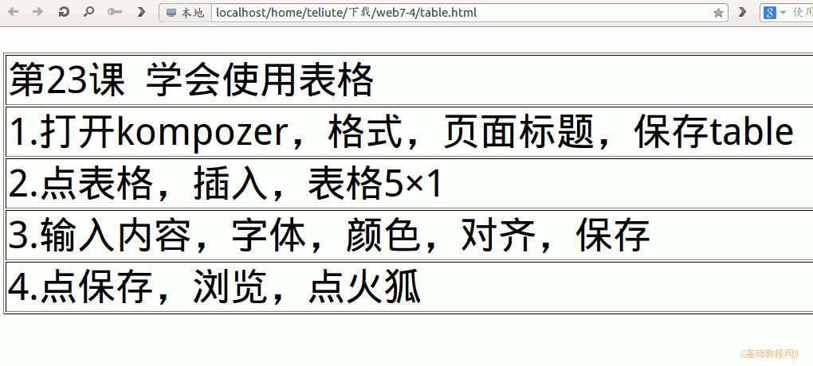

2011-2012 第二学期七年级文字处理和网页教学设计
作者：TeliuTe 来源：基础教程网
二十三、学会使用表格 返回目录 下一课
（一）教学设计
1、学习目标：学会使用表格
2、注意事项：
3、教学过程：先移动鼠标，到位置再点。
1）教师准备学案和板书；
2）学生整队进入，开机抄黑板上笔记；
3）教师讲解板书演示操作；
4）学生打指法、日志、完成操作；
5）教师打勾记录学生指法成绩，检查日志和操作；
注：学生抄完笔记就开始打指法、日志，老师讲完后再继续完成；
（二）板书设计(学生笔记)
第23课 学会使用表格
1、打开kompozer、格式、页面标题、保存
2、点表格、插入、表格、5×1
3、输入内容、字体、颜色、对齐、保存
4、点保存、浏览、点火狐
操作图示：

（三）课后记
构思了一下先学表格，然后再学插入图片
这样下节课可以在表格里插入图片
--
九年级学过，把容易出错的地方写到板书里
写完才四条，也足够了，加上上节课的内容
--
强调绕弯，出不来的地方让自己动脑筋
有个输入法出不来，不找了让重启一下
--
讲解主要是步骤方面的，具体操作还要演示一遍
不用讲太细致，后面操作的地方还会有
--
操作中把重点的地方讲一下，
简单的设置属性都会了，保存成英文提醒一下
--
一下做出来好多不好检查，容易乱
要是火狐不卡的话，可以先把标签准备好
--
下次试试就可以了，让直接写日志
指法的flash容易卡住，不知是什么原因
--
返回目录 下一课
本教程由86团学校TeliuTe制作|著作权所有
基础教程网：http://teliute.org/
美丽的校园……
转载和引用本站内容，请保留版权信息和本站链接。